Full TV guide (EPG)
A guide grid with a live preview, minutes left and the playing channel marked. XMLTV guides come from your playlist, and you can add your own links (.gz and .xz work).
Built for the remote on TV and for touch on phones and tablets, smooth on a Fire TV Stick, and every feature unlocked. Add your own M3U link or Xtream Codes login and watch with a full TV guide.

The TV guide, catch-up, multi-view, the phone app and every free feature, in one minute.
Made for watching TV from the sofa with a remote. Nothing is locked, nothing is sold.
A guide grid with a live preview, minutes left and the playing channel marked. XMLTV guides come from your playlist, and you can add your own links (.gz and .xz work).
An M3U link, an Xtream Codes login or a local file. Playlists update on start, daily, weekly or monthly.
OK opens the options, Left the groups. Or set Left and Right to change channel.
Favourites, recent and your own groups. Hide, rename and reorder; strip "UK:" from names.
Guide frames dropped from about 46 ms to 14 ms on a 32-bit Fire TV, so scrolling keeps up with the remote.
Hardware decoding, AC3 / E-AC3 / DTS through FFmpeg on TVs that can't decode it, automatic reconnect, and a switch between .ts and .m3u8 when a channel fails.
No account, no ads, no analytics. Your logins stay on your TV.
New versions arrive inside the app. Backups move everything to a new TV.
Touch layouts with the video on top and channels below. Turn the phone for fullscreen. Works with gesture navigation.
Watch programmes that already aired, browse your provider's films and series and carry on where you stopped, record to the TV or a USB drive, and watch up to four channels at once. A PIN keeps chosen channels for grown-ups, reminders tell you when a programme starts, and DRM-protected channels (Widevine, ClearKey, PlayReady) and DASH streams play too.
There is no premium version, no account, no activation and no ads.
Download the APK on your Android TV, Google TV or Fire TV Stick.
Enter your M3U link or Xtream Codes login. Channels, groups and the guide load by themselves.
Browse the guide, press OK, and zap with the remote.
Tiviate is made for a TV remote. This is what each key does on the three main screens.
| Key | Fullscreen | Channel list | TV guide |
|---|---|---|---|
| OK | Player options: channels, guide, pause, audio, subtitles, display, zoom, quality, sleep… | Play the channel | Play in the preview; OK again goes fullscreen |
| Hold OK | Player options | Channel menu: hide, rename, favourite, groups, guide | Channel and programme menu |
| Up CH+ | Next channel | Move | Move (CH± a page) |
| Down | Player options, or previous channel with "Up and Down: change channel" | Move | Move |
| CH− | Previous channel | — | Page |
| Left | Channel list with groups, or previous channel with "Left / Right change channel" | Groups | Earlier programme; on now, the groups |
| Right Guide | TV guide, or next channel with "Left / Right change channel" | — | Later programme |
| Info | Info bar; then Left/Right peek at other channels, OK switches | — | — |
| Menu | Player options | — | Channel and programme menu |
| Play/Pause | Pause and resume live TV | — | — |
| FF RW | — | — | Jump 2 hours |
| 0–9 | Go to a channel number | — | — |
| Back | TV guide (or leave the app, with the guide turned off) | Close | Press twice to exit |
| Hold Back | Back to the player from any screen | — | — |
Taken with Tiviate's test playlist: made-up channels and the project's own test video. No real broadcaster content is shown.


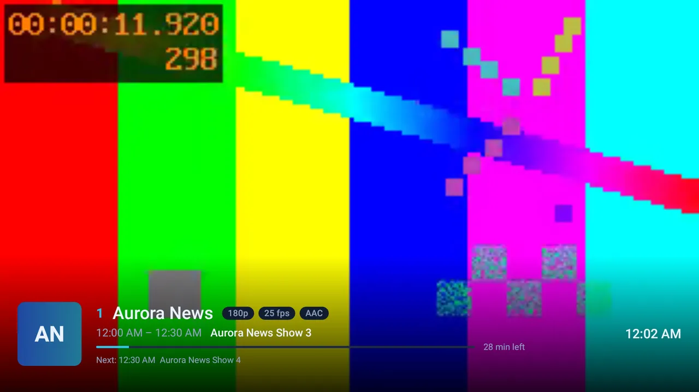

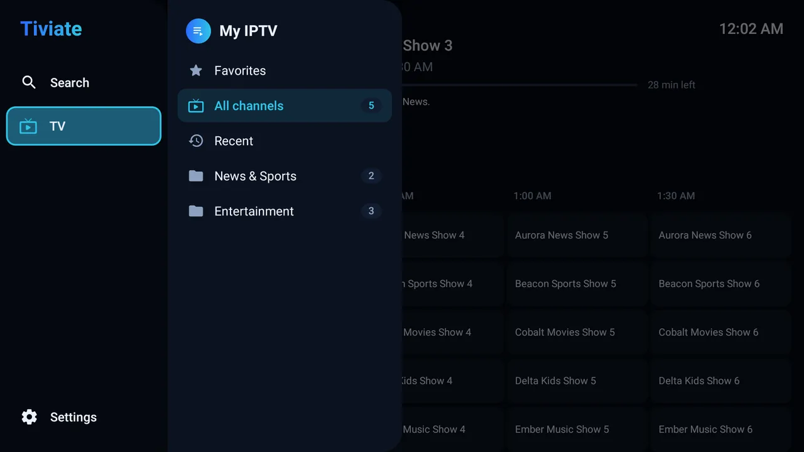
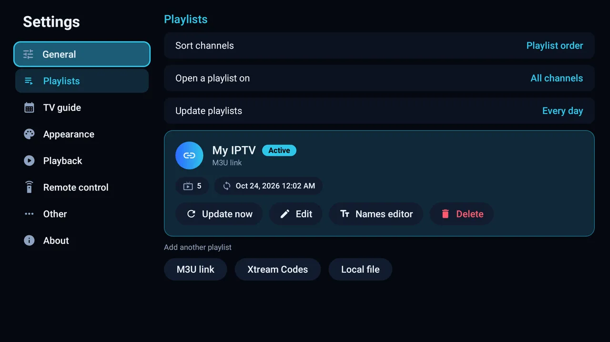
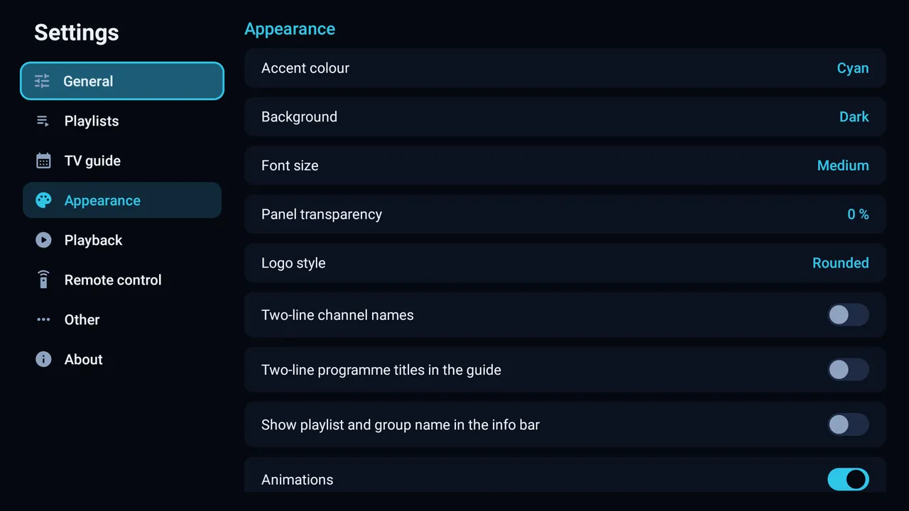
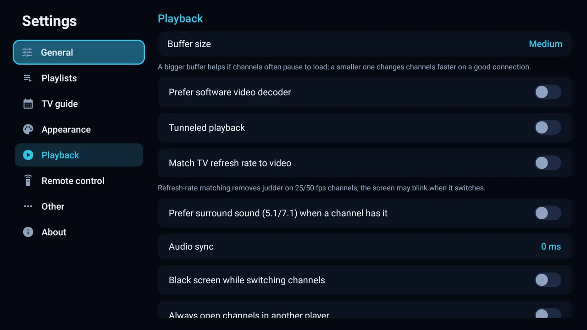
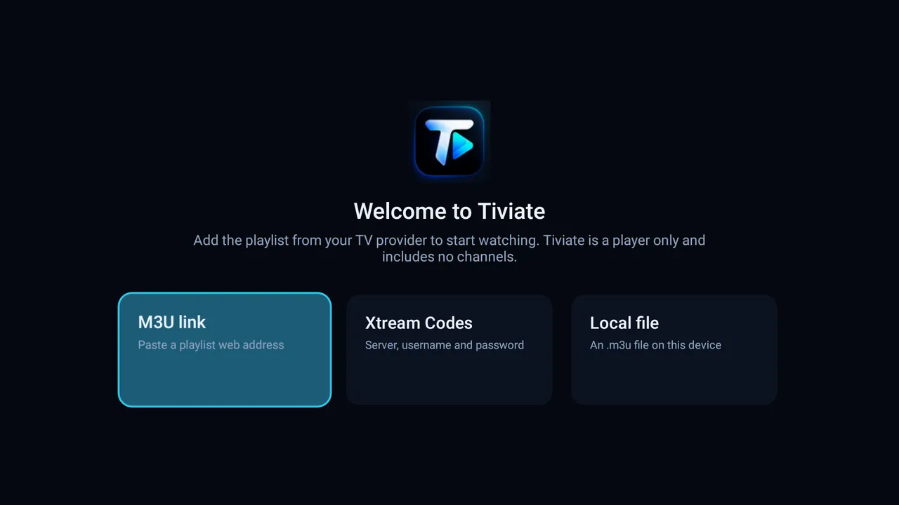
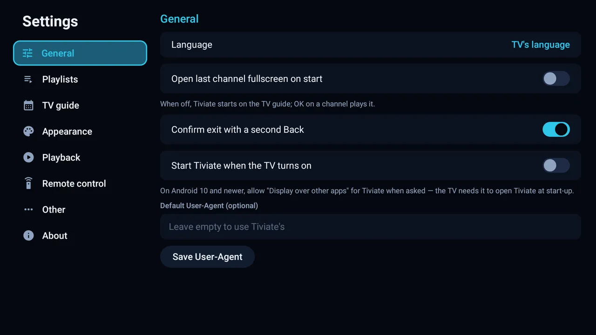
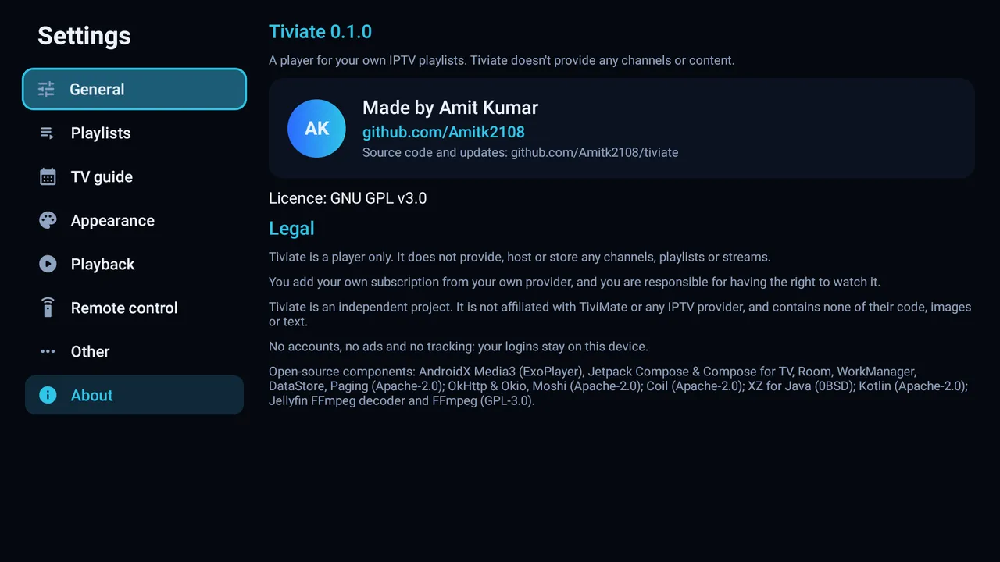
Touch layouts that change when you turn the device: video on top and channels below when upright, fullscreen when sideways. Works with gesture and three-button navigation.
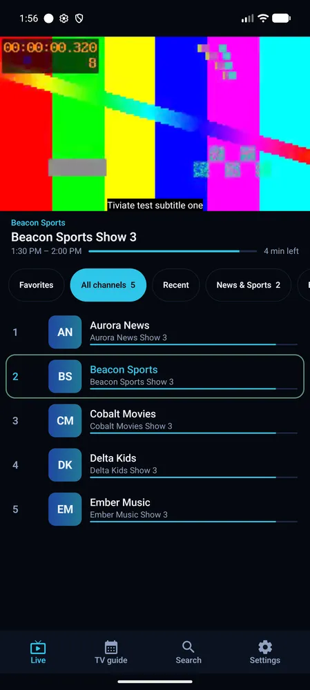
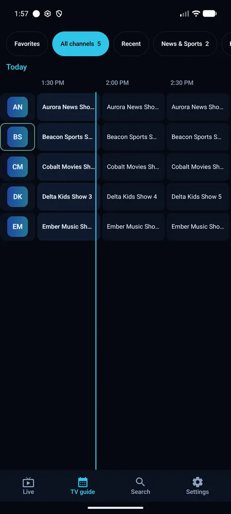
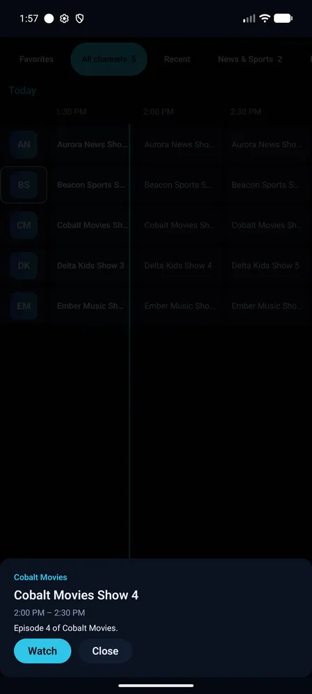
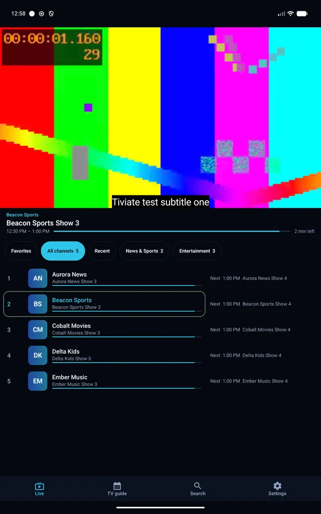
If you like how TiviMate works on a TV but don't want to pay to unlock features, Tiviate covers the same everyday use: live TV with a guide, groups and favourites, all driven by the remote. Here is an honest comparison, including what Tiviate doesn't do yet.
| Feature | Tiviate | TiviMate |
|---|---|---|
| Price | Free, every feature | Free version and a paid Premium subscription |
| Account or activation | None | Account to activate Premium |
| Device limit | None | Premium: up to 5 devices |
| Source code | Open, GPL-3.0 | Closed |
| M3U and Xtream Codes | Yes | Yes |
| TV guide (XMLTV, .gz, .xz) | Yes | Yes |
| Favourites, own groups, hide and rename | Yes | Yes |
| Several playlists | Yes | Yes |
| Backup and restore | Yes | Not checked |
| Left / Right change channel | Yes, optional | Not checked |
| Stalker portal | Not yet | Yes |
| Movies and series (VOD) | Yes, free | Yes |
| Programme reminders | Yes, free | Yes |
| Catch-up and recording | Yes, free | Yes |
| Multi-view and parental controls | Yes, free | Yes |
The TiviMate column comes from the text inside TiviMate's own app, checked on a Fire TV in October 2026. Which of its features need Premium wasn't checked; see TiviMate's website for current details. TiviMate is a trademark of its owner. Tiviate is an independent project, not affiliated with TiviMate, and contains none of its code, images or text.
On Android TV and Google TV, download the APK with a browser or a file-sending app and open it.
Install the free Downloader app from the Amazon Appstore.
Settings → My Fire TV → Developer options → Install unknown apps → turn on Downloader. No Developer options? Open My Fire TV → About and press the device name 7 times.
In Downloader, enter github.com/Amitk2108/tiviate/releases/latest and install the .apk.
Open Tiviate and add your M3U link, Xtream Codes login or M3U file.
On the TV, turn on ADB debugging in Developer options and note the IP address (My Fire TV → About → Network). On the computer run adb connect TV-IP:5555, then adb install -r Tiviate.apk, and accept the prompt on the TV.
Pick how your provider gave you the playlist: an M3U link, Xtream Codes (server, username, password) or a local .m3u file. Channels, groups and the TV guide load by themselves. Your login stays on the TV and can be edited in Settings → Playlists.
Yes. Every feature is free. There is no premium version, no account, no ads and no tracking. The source code is open under the GPL-3.0 licence.
No. Tiviate is a player only. You add the M3U link, Xtream Codes login or M3U file you already have from your own provider.
Yes. Tiviate is an independent, open-source IPTV player for the same kind of use: live TV with a TV guide on Android TV and Fire TV. All of its features are free. It is not affiliated with TiviMate.
Install Downloader from the Amazon Appstore, allow it under Settings, My Fire TV, Developer options, Install unknown apps, then open github.com/Amitk2108/tiviate/releases/latest in Downloader and install the APK.
Yes. Add an Xtream Codes login (server, username and password), an M3U or M3U8 link, or a local M3U file. Tiviate loads the channels, groups and TV guide from it.
Yes. Tiviate finds the XMLTV guide from your playlist automatically, and you can add your own guide links in Settings. Plain, .gz and .xz files work.
Yes. Turn on Settings, Remote control, Left / Right change channel. You can also turn off the TV guide so Tiviate always opens fullscreen.
Android TV and Google TV devices, Amazon Fire TV and Firestick, and Android phones and tablets, on Android 7.0 or newer. Each gets its own layout: the TV app with the remote, and touch layouts on phones and tablets that change when you turn the device.
Tiviate is written in Kotlin with Compose for TV and AndroidX Media3, and released under GPL-3.0. Bug reports, ideas, translations and pull requests are welcome.
The 40 translations were machine-written. A native speaker who reviews one language helps a lot.
About 10 MB. No sign-up. Works with the subscription you already have.